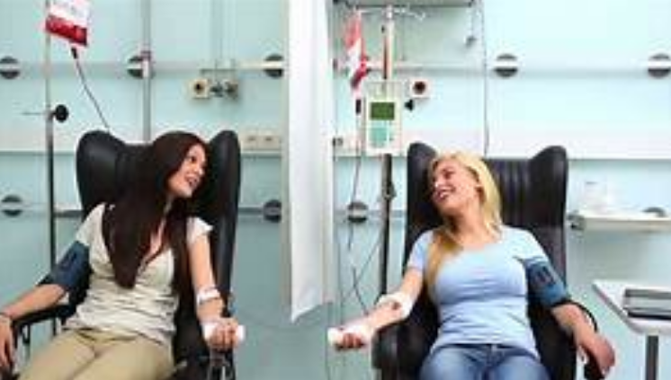

SANBS Opperations The Ins and Outs of SANBS from the team of our good doctors to individuals giving a part of their lives for another without a doubt.
Blood Donation Projects Have a look at donations taking place and where lives are saved.

Reviews and Saved lives The people tell their experience and the saved appretiate the donors.
Our Team Proffesional associates and volunteers behind the works of saving lives.